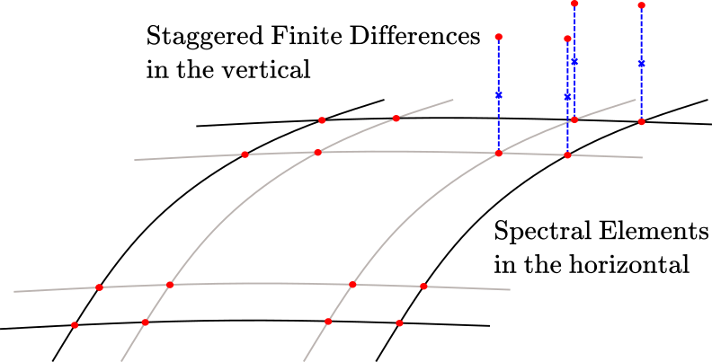

Spaces
A space is a grid together with the information a field needs to live on it: for a vertical grid, the staggering (cell centers or cell faces). Two discretizations are provided, spectral elements (continuous or discontinuous Galerkin) in the horizontal and staggered finite differences in the vertical, and their product is an extruded (hybrid) space.

An extruded space on a box: spectral elements with their quadrature nodes in the horizontal, stacked over the cells of a staggered vertical grid.
ClimaCore.Spaces — Module
SpacesFunction spaces on which fields are defined. A space combines a grid (domain, topology, coordinates, metric terms, and quadrature rules and weights) with a vertical staggering.
Notes
References: CEED and the ClimateMachine sphere helpers.
ClimaCore.Spaces.Δz_data — Function
Δz_data(space::AbstractSpace)Return a DataLayout containing the vertical extent Δz = ∂z/∂ξ³ of each cell of space [m].
Finite Difference Spaces
A finite-difference space holds one value per cell of an interval mesh, either at the cell centers (CenterFiniteDifferenceSpace) or at the faces between cells (FaceFiniteDifferenceSpace). Construct one of the two from the mesh and derive the other from it with Spaces.face_space or Spaces.center_space; the two share one grid and no geometry is allocated twice.
ClimaCore.Spaces.FiniteDifferenceSpace — Type
FiniteDifferenceSpace(grid::Grids.FiniteDifferenceGrid, staggering::Staggering)
FiniteDifferenceSpace(topology::Topologies.IntervalTopology, staggering::Staggering)One-dimensional finite-difference space, located at either
- cell centers, where
staggeringisGrids.CellCenter, or - cell faces, where
staggeringisGrids.CellFace.
Spectral Element Spaces
ClimaCore.Spaces.SpectralElementSpace1D — Type
SpectralElementSpace1D(grid::Grids.SpectralElementGrid1D)
SpectralElementSpace1D(
topology::Topologies.IntervalTopology,
quadrature_style::Quadratures.QuadratureStyle;
discretization = nothing,
kwargs...
)A one-dimensional spectral-element space. The second form builds the Grids.SpectralElementGrid1D and forwards kwargs to it; discretization = Grids.DG() makes the space discontinuous across element boundaries, and omitting it follows the quadrature. Read the choice back with Spaces.discretization.
ClimaCore.Spaces.SpectralElementSpace2D — Type
SpectralElementSpace2D(grid::Grids.SpectralElementGrid2D)
SpectralElementSpace2D(
topology::Topologies.Topology2D,
quadrature_style::Quadratures.QuadratureStyle;
discretization = nothing,
kwargs...,
)A two-dimensional spectral-element space. The second form builds the Grids.SpectralElementGrid2D and forwards kwargs to it (discretization, enable_bubble, enable_mask, autodiff_metric, VIJH); discretization = Grids.DG() makes the space discontinuous across element boundaries, so Spaces.weighted_dss! is a no-op and inter-element coupling goes through numerical fluxes. Omitting it follows the quadrature. Read the choice back with Spaces.discretization.
Examples
space = Spaces.SpectralElementSpace2D(topology, Quadratures.GLL{4}())
dg_space = Spaces.SpectralElementSpace2D(
topology,
Quadratures.GLL{4}();
discretization = Grids.DG(),
)ClimaCore.Spaces.SpectralElementSpaceSlab — Type
SpectralElementSpaceSlab <: AbstractSpaceView into a spectral element space for a single slab (one element at one level).
Discretization: CG or DG
The Galerkin discretization of a spectral-element grid is a type parameter of the grid, set with the discretization keyword of the grid and space constructors and read back from the space (Choose CG or DG).
The types and accessors are documented on the Grids page: Grids.Discretization, Grids.CG, Grids.DG, Grids.discretization, Grids.is_continuous. Spaces.discretization and Spaces.is_continuous are the same functions applied to a space.
ClimaCore.Spaces.node_horizontal_length_scale — Function
Spaces.node_horizontal_length_scale(space::AbstractSpectralElementSpace)
Spaces.node_horizontal_length_scale(::Nothing)Return the approximate distance between nodes: the length scale of the mesh (see Meshes.element_horizontal_length_scale) divided by the number of unique quadrature points along each dimension. The method for nothing returns 1.
Extruded Finite Difference Spaces
ClimaCore.Spaces.ExtrudedFiniteDifferenceSpace — Type
ExtrudedFiniteDifferenceSpace(grid, staggering)
ExtrudedFiniteDifferenceSpace(
horizontal_space::AbstractSpace,
vertical_space::FiniteDifferenceSpace,
hypsography::Grids.HypsographyAdaption = Grids.Flat();
deep::Bool = false,
)Extruded finite-difference space: a horizontal space extruded along a staggered vertical direction, with grid information at either
- cell centers, where
staggeringisGrids.CellCenter, or - cell faces, where
staggeringisGrids.CellFace.
The second constructor takes the staggering from vertical_space; deep = true selects deep-atmosphere spherical geometry.
Point Spaces
ClimaCore.Spaces.PointSpace — Type
PointSpace <: AbstractSpaceA zero-dimensional space: a single point, the horizontal space of one column (Spaces.level of a FiniteDifferenceSpace). For N disconnected horizontal points see MultiPointSpace, and for N independent columns see MultiColumnFiniteDifferenceSpace.
Constructor
PointSpace(context::ClimaComms.AbstractCommsContext, local_geometry::Geometry.LocalGeometry)
PointSpace(context::ClimaComms.AbstractCommsContext, coord::Geometry.Abstract1DPoint)
PointSpace(device::ClimaComms.AbstractDevice, x)
PointSpace(x)Construct a PointSpace from a LocalGeometry, or from a 1D coordinate with unit metric terms. Without a context, the default ClimaComms.context() is used.
Multi-column Spaces
ClimaCore.Spaces.MultiPointSpace — Type
MultiPointSpace(grid)Horizontal space of N independent (lat, lon) points. This is the N-column analog of PointSpace, which is the single-column level space.
Like SpectralElementSpace2D, the wrapped grid is either
- a
Grids.MultiPointGrid, the level-agnostic horizontal grid of aMultiColumnFiniteDifferenceSpace(returned bySpaces.horizontal_space), or - a
Grids.LevelGridof the extruded multi-column grid at a single vertical level (returned bySpaces.level), carrying full 3D local geometry.
ClimaCore.Spaces.MultiColumnFiniteDifferenceSpace — Type
MultiColumnFiniteDifferenceSpace(grid, staggering)Space of N independent vertical columns at arbitrary horizontal (lat, lon) locations on a sphere. This is the N-column generalization of Spaces.FiniteDifferenceSpace, the single-column space:
- The data layout is
VIJFH{LG, Nv, 1, 1, N}: the same vertical structure for every column, with full 3D local geometry including lat, lon, and z coordinates. Spaces.levelreturns aMultiPointSpace(Npoints at that level) rather than a spectral element horizontal space.Spaces.columnreturns a single-columnSpaces.FiniteDifferenceSpace.Fields.bycolumniterates over each column independently.
There is no horizontal connectivity between columns; DSS and horizontal spectral-element operators are not supported.
Utilities
ClimaCore.Spaces.area — Function
Spaces.area(space::Spaces.AbstractSpace)Return the length, area, or volume of space, computed as the sum of the quadrature weights $W_i$ multiplied by the Jacobian determinants $J_i$:
\[\sum_i W_i J_i \approx \int_\Omega \, d \Omega\]
If space is distributed, this uses a ClimaComms.allreduce operation.
ClimaCore.Spaces.local_area — Function
Spaces.local_area(space::Spaces.AbstractSpace)Return the length, area, or volume of the part of space local to the current process. See Spaces.area.